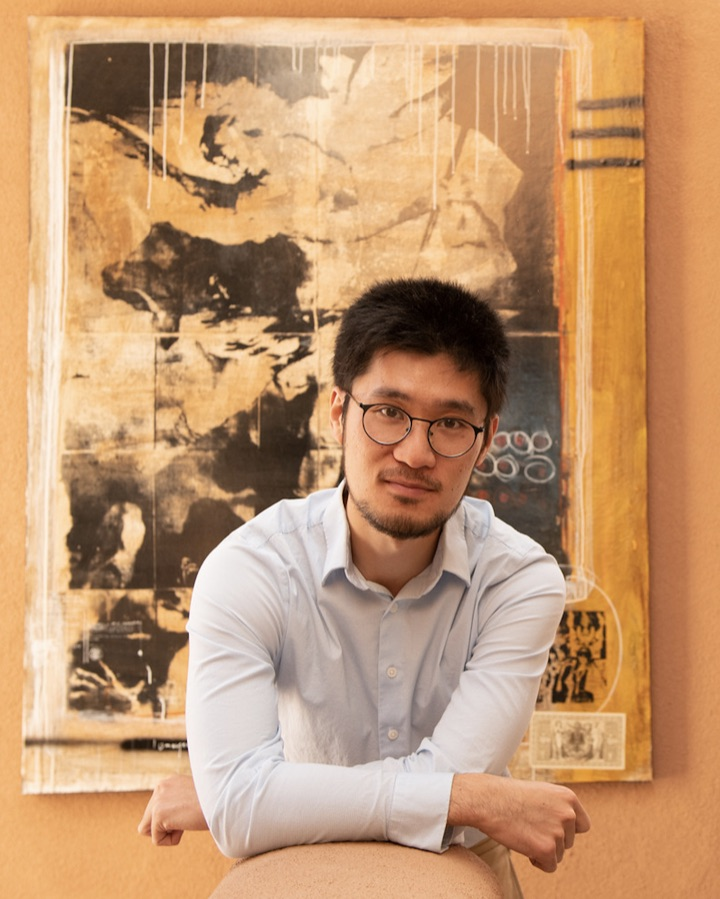

People — AI & Dynamics Group, University of Rochester

Yuanzhao Zhang
Yuanzhao is drawn to systems that are complex enough to surprise you, yet simple enough to understand — coupled oscillators, neural networks, and the territory in between. He earned his Ph.D. in physics from Northwestern in 2020 with Adilson Motter, then held a Schmidt Science Fellowship at Cornell with Steven Strogatz and an Omidyar Fellowship at the Santa Fe Institute before joining the University of Rochester in 2026. He likes problems that sit on the boundary between fields and explanations simple enough to sketch on a napkin.
Declan Norton
Joining from the University of Maryland, where he completed a Ph.D. in physics in 2026. He works on machine learning for dynamical systems — reservoir computing, generalization to unseen state space, and forecasting from short time series. Google Scholar
The lab is being assembled. This page will grow.
Recruiting Ph.D. students for Fall 2027 admission, with postdoc inquiries welcome year-round. UR undergraduates interested in research are encouraged to reach out.